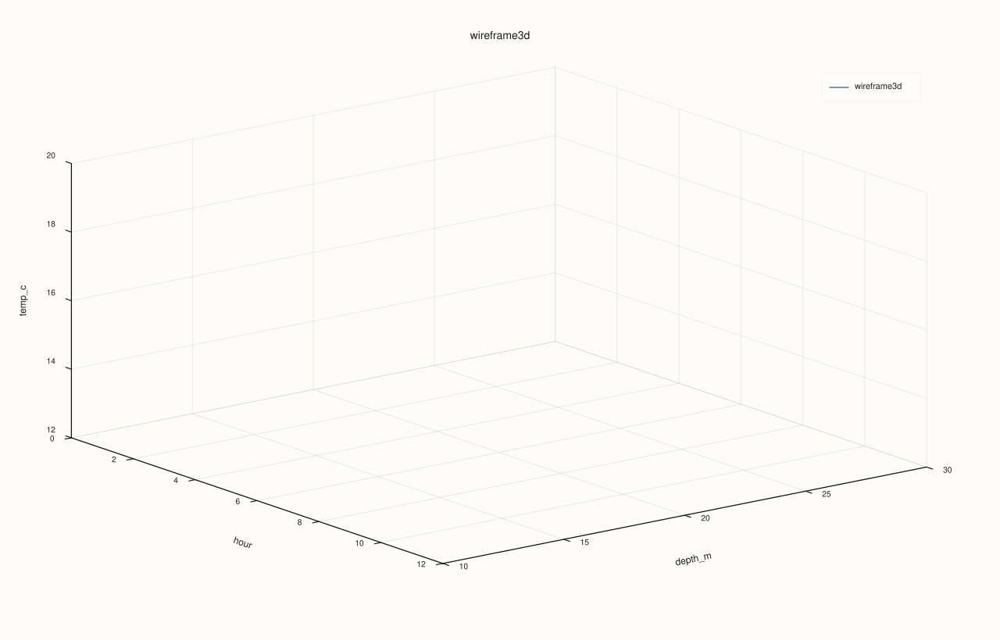
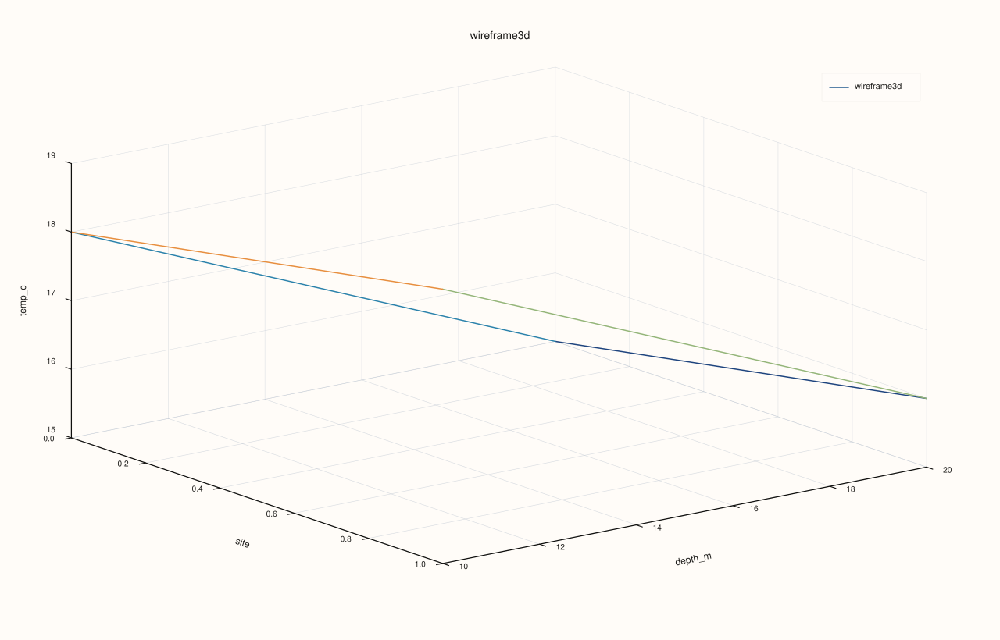

DataFramePlot3DAccessor::wireframe¶
Back to DataFramePlot3DAccessor API Reference
Signature¶
DataFramePlot3DAccessor::wireframe(
std::string_view x_feature,
std::string_view y_feature,
std::string_view z_feature,
DataFrame::GroupOp op = DataFrame::GroupOp::Mean,
const Wireframe3DPlotOptions& options = {}) const -> pluss::pl::Studio
What It Does¶
Draws the same aggregated 3D grid as surface() — y_feature’s distinct
values as rows, x_feature’s distinct values as columns, each cell aggregating
z_feature via op — but rendered as a wireframe mesh (grid edges only) instead of a
filled, continuous surface. Every construction detail (the pivot_table() call, the
grid-coordinate resolution, the restricted set of supported op values, the dropped-row
and zero-fill behavior) is identical to surface(); only the final trace call differs
(flash::lattice(...) here instead of flash::sheet(...)).
See surface() for the full explanation of how the grid is built, and
line() for the shared Studio-return / no-cout mechanics and the full
Plot3DSceneOptions/Plot3DTraceOptions layering explanation.
Important
Same numeric-grid constraint as surface()
wireframe() now inherits the broadened pivot_table() aggregations too, including
Std, Var, and Mode. The real restriction is the same one surface() has: once the
table is pivoted, the z-grid still has to be numeric so it can be rendered in 3D. See
surface()’s important callout for the full explanation.
Parameters¶
x_feature (std::string_view)
Feature whose distinct values become the grid’s columns (x-axis) — see
surface()’s note on grid-coordinate resolution.
y_feature (std::string_view)
Feature whose distinct values become the grid’s rows (y-axis).
z_feature (std::string_view)
Feature aggregated into each grid cell’s height.
op (DataFrame::GroupOp, default Mean)
The aggregation applied per cell — see surface()’s important callout
for which values are actually supported.
options (Wireframe3DPlotOptions)
cpp struct Wireframe3DPlotOptions { Plot3DSceneOptions scene{}; Plot3DTraceOptions trace{}; };
The same shared structs documented in full on line(); wireframe() has no
fields of its own beyond these two. A Wireframe trace preset (tuned lighting/shading
for mesh edges) is available via options.trace.preset.
Returns¶
pluss::pl::Studio
A figure with one 3D pane containing a single wireframe-mesh trace over the aggregated
grid.
Examples¶
Example 1. Default op (Mean): the same numeric grid surface()’s Example 1 draws,
rendered as edges instead of a filled mesh.
using namespace pluss::table;
auto readings = DataFrame({
{"depth_m", Thread(pluss::make_series({10.0, 10.0, 20.0, 20.0, 30.0, 30.0}))},
{"hour", Thread(pluss::make_series({0.0, 12.0, 0.0, 12.0, 0.0, 12.0}))},
{"temp_c", Thread(pluss::make_series({18.0, 20.0, 15.0, 16.5, 12.0, 12.5}))},
});
auto chart = readings.plot3d().wireframe("hour", "depth_m", "temp_c");
chart.save_svg("temp_wireframe.svg");
Example 2. A different aggregation (Min).
auto chart = readings.plot3d().wireframe("hour", "depth_m", "temp_c", DataFrame::GroupOp::Min);
chart.show();

Example 3. The Wireframe trace preset, tuned for mesh-edge rendering.
Wireframe3DPlotOptions options;
options.trace.preset = pluss::pl::flash::TracePreset3D::Wireframe;
auto chart = readings.plot3d().wireframe("hour", "depth_m", "temp_c", DataFrame::GroupOp::Mean, options);
chart.save_pdf("temp_wireframe_styled.pdf");

Example 4. A categorical x_feature, falling back to positional x-coordinates exactly
like surface()’s Example 3.
auto tagged = DataFrame({
{"site", Thread(pluss::make_note({"north", "north", "south", "south"}))},
{"depth_m", Thread(pluss::make_series({10.0, 20.0, 10.0, 20.0}))},
{"temp_c", Thread(pluss::make_series({18.0, 15.0, 19.0, 16.0}))},
});
auto chart = tagged.plot3d().wireframe("site", "depth_m", "temp_c");
chart.show();

Example 5. Var is now supported, producing a sample-variance mesh.
auto repeated = DataFrame({
{"depth_m", Thread(pluss::make_series({10.0, 10.0, 10.0, 10.0}))},
{"hour", Thread(pluss::make_series({0.0, 0.0, 12.0, 12.0}))},
{"temp_c", Thread(pluss::make_series({18.0, 20.0, 15.0, 19.0}))},
});
auto chart = repeated.plot3d().wireframe("hour", "depth_m", "temp_c", DataFrame::GroupOp::Var);
chart.show();
Notes¶
Every construction detail is shared with
surface()— only the final trace shape differs (mesh edges vs. a filled surface).The pivot step supports the broader grouped op set now too; the remaining practical constraint is still numeric convertibility of the rendered z-grid.
Returns a
pluss::pl::Studio— seeline()’s important callout for how to view or save the result.
See Also¶
DataFramePlot3DAccessor::surface: the identical grid, rendered as a filled continuous mesh instead of edges.DataFramePlot3DAccessor::hist: a binned-count grid instead of an aggregated-value grid, withas_wireframe = trueproducing a visually similar mesh.